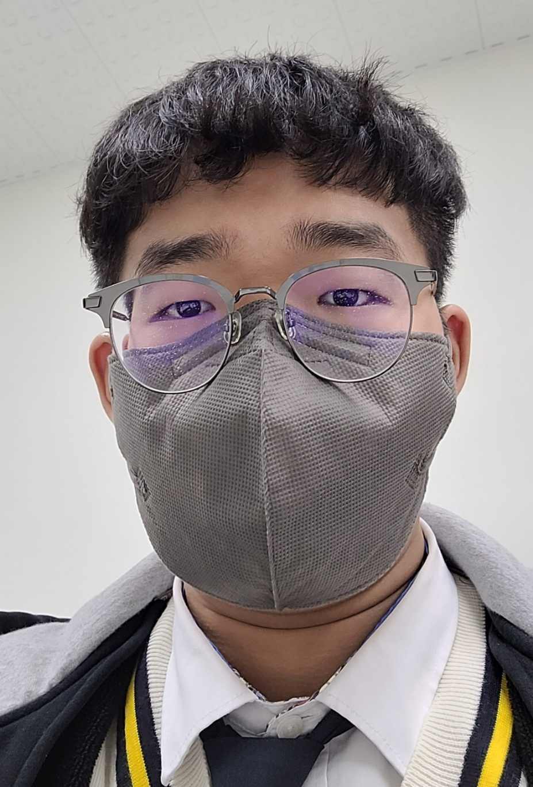
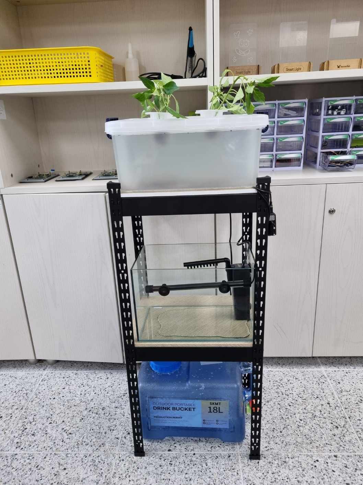
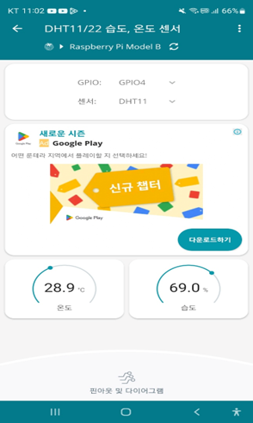
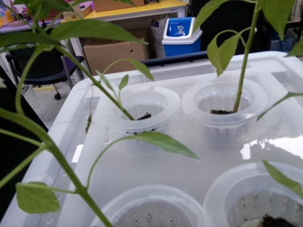

YH팀 소개 페이지
팀원 소개
팀장인 윤영빈 입니다. 팀원인 황요한 입니다.

외부 형태

세부설명: 상단에는 식물을 기르는 공간으로서 식물의 환경을 조성하였고,
중간에는 어항을 설치하여 물고기를 기르는 공간으로서 중심적인 역할을 한다고 볼 수 있고,
하단에는 관수를 줄 수 있는 통을 설치하여 물의 증발, 물의 청정 역할을 맡는다고 볼 수 있습니다.
기능 구현

세부설명: 아두이노 온습도 센서를 이용하여 라즈베리파이에 연결해서,
온도와 습도 값을 모바일과 연동하여 온도와 습도를 애플리케이션 상에 뜨게 하였습니다.

세부설명: 라즈베리파이와 라즈베리파이 카메라 모듈을 사용하여,
모니터링이 되도록 설계하여 폰과 연동하여 라즈베리파이 카메라 모듈에서 보는 것이 폰에도 나오게 했습니다.